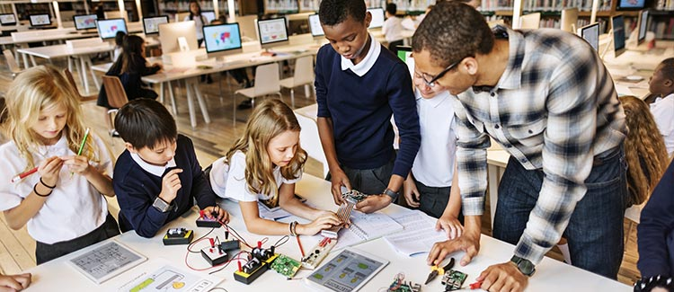

¿Qué es Arduino?
Posted on 20 Diciembre , 2017 at 10:00 AM

Arduino es una placa con un microcontrolador que facilita el uso de la electrónica en proyectos multidisciplinares. Pero, ¿cómo funciona? Podemos comparar esta placa con un ordenador. El ordenador tiene un procesador, al cual, le conectamos varios dispositivos de entrada, como un ratón, un teclado, etc. Nuestro procesador usa la información que le llega de todos esos dispositivos y genera salidas, a través de un monitor, del sonido, etc.
Con esta comparación, podríamos decir que Arduino es nuestro procesador o “cerebro” al que le conectamos varios dispositivos de entrada, se transforma la información y pasa a los dispositivos de salida.
Arduino es perfecto para trabajos de electrónica al alcance de cualquiera, es sencillo y se pueden hacer gran cantidad de proyectos útiles e interesantes. Desde automatizar nuestra casa hasta crear alarmas que nos envíe un mensaje de aviso cuando alguien entra en una habitación. Esta placa está diseñada para gente que no tiene un gran conocimiento de ingeniería electrónica o un trasfondo científico y técnico.
Arduino se utiliza mucho en los entornos educativos, más concretamente en la educación STEM (science, Technology, Engineering and Mathematics). La creación de robots permite el desarrollo de la imaginación, el pensamiento lógico, trabajo en equipo, etc. Permitiendo así la introducción de los jóvenes en los campos de robótica y programación.
